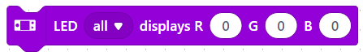
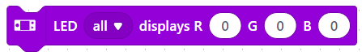
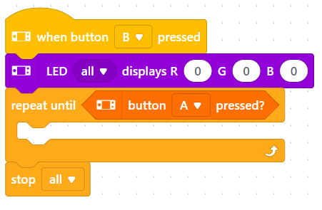
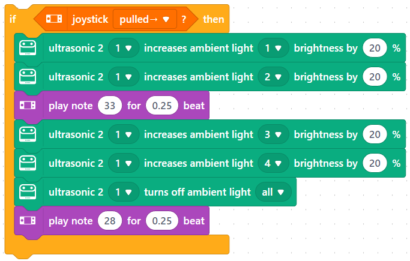
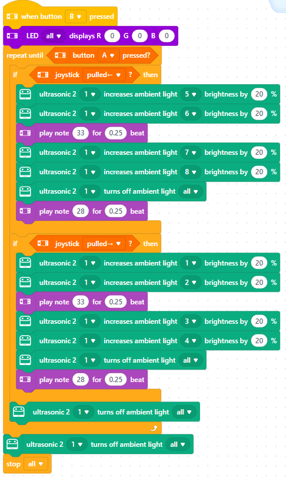
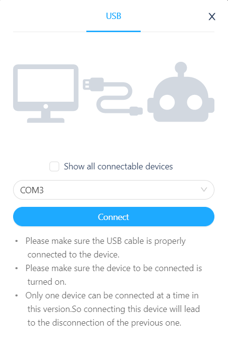
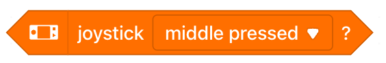
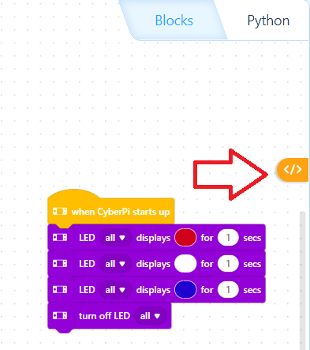
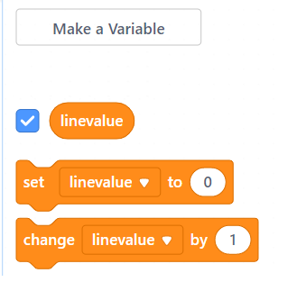

"Robotics workshop with the mBot" by Oussama Chougna, Martin Visser, Eddy Vos, Boet van Westerop, Frank van Westerop and Blue4IT Professionals BV, is licensed under CC BY-NC-SA 4.0

1. Making Indicators
Time to get started! We are going to make remote-controlled indicators with the mCore computer. These will later become the indicators of our robot. In this assignment you will also learn how the programming environment works. This is a computer program for making computer programs… Good luck!
Preparation
First make some more space on your screen: Go to at the top of your screen and click on 'Hide stage'. The panda will now disappear from the screen so that you have some more space on your worksheet.
Start of your program
Choose from the blocks category  Event the block
Event the block  or and drag it with your mouse to the top of your worksheet. This is the starting point of your first program.
or and drag it with your mouse to the top of your worksheet. This is the starting point of your first program.
Choose from the blocks category  LED the block 
LED the block 
We use this block here to turn off all the LEDs, so set the values to 'all' and fill in '0' for the numbers everywhere. Then drag the block under the previous block so that it clicks into place.
Choose from the blocks category Control the block  and drag it under the previous block.
and drag it under the previous block.
Choose from the blocks category  sensing the block
sensing the block  and drag it into the previous block, behind the word 'until'.
and drag it into the previous block, behind the word 'until'.
Choose from the blocks category Control the block  and drag it under the 'repeat until' block.
and drag it under the 'repeat until' block.
Result
You should now have this:

This may not seem like much, but this is actually the most important structure of your program. Of every computer program, actually:
Every computer program has this:
- Start block
-
This is where your program always starts. In our case, this is the block
By clicking on it with your mouse, you start the program. - Start values block
-
This is where important things are set up for the program once.
In our case, we turn off all the LEDs here with the block - Main loop
-
Everything in the main loop is executed again and again by your program.
For us, that is everything within the block and is now still empty… - Stop condition
-
In our main loop it says: 'repeat until key space pressed'
When you do that, you leave the main loop. But after that, nothing comes, so the program stops.
So our stop condition is the block - End block
-
Here you put everything back as it was just before your program started. So turning off LEDs and motors, for example. For us, this is the block
Let’s quickly start making things for our main loop!
Left indicator
I think you’ve noticed that the blocks within each block category all have the same color. That’s handy to find them more easily. Try it out:
Replicate the following piece of program and pay close attention to the colors. You now understand in which block categories you should look for them. The result can remain on your worksheet for a while, next to the main loop that you had already made.
| Note: The 'if-then' block looks a lot like the 'repeat-until' block. So look carefully! |
Right direction indicator
Now make the piece of program for the right direction indicator. That is almost the same as the left one: only the arrow key that you have to press and the LED that has to go on are different.
|
You can also copy the left direction indicator and adjust the copy to make the right direction indicator: Click with the right mouse button on the 'if-then' block and then choose "Copy". The copy is now hanging on your mouse. Move a bit down and now click with the left mouse button to release the copy. Make the necessary adjustments. |
If all goes well, you have now added this block:

Merge parts
You now have three parts on the worksheet. You can now click the two blocks of the left and right direction indicator together and then place the whole thing in the main loop, the 'repeat until…' block
Result

Testing
Time to try it out! You are now going to connect your laptop to the mCore computer of the mBot and control it wirelessly.
Connecting
Plug the cable into a USB port on your laptop. Now turn on the mCore computer using the black slide button on the side.
Make the stage visible again: Go to at the top of your screen and click 'Hide stage' again. The 'Connect' button will now be visible at the bottom of your screen. Click on it.
You will now see a dialog window where you have to indicate how you want to connect. (With a cable, Bluetooth, a dongle…) Select the 'USB' tab. Then click on the 'Connect' button.

Try it out
When you then click on the hat with the green flag, the LEDs on the mCore computer will go out. Now press the selected mBot keys. What happens?
Then press the space bar. Do you see what happens on the screen? And with the mCore?
Create your own
The sound that the indicators make is determined by the  blocks. You can change the sounds by adjusting the value for 'noot'.
blocks. You can change the sounds by adjusting the value for 'noot'.
The time that your indicators are on or off is determined by the values in the 'count' boxes. Try out a few other values.
You have now made indicators for a standard car. But you can also make other types of indicators. For example, those of a police car or a fire engine. Or an ambulance. Or a train. Or an airplane. Or a spaceship. Or a… Well, you get the idea. You can’t think of anything that you can’t make. Just try it out!
Done!
Congratulations! You’ve written your first mCore program!
2. You Control the Robot with the Joystick!
In this assignment, the robot will finally move! You will make the robot drive forwards and backwards, and really steer it. And stop of course.
Driving forwards and backwards
We are going to make the robot drive! Follow the steps below:
Copy the following piece of program and simply place it on the worksheet, next to your program from the previous assignment:

Copy the piece of program from the previous step. (Do you remember how to do that?) Use the right mouse button to copy. Click the copy under the piece of program from step 1.
Adjust the key and the direction of travel of one of the two new program blocks. Then place the whole thing in the program that you already had from the previous assignment. Place the new blocks exactly under the existing 'if…then' blocks.
All movements must stop when the program is finished. Therefore, add an  block. This stops rotation.
block. This stops rotation.
Result
Your program will then look like this:

Testing
Start your program and see what happens when you press the joystick. Be careful that the robot does not drive off the table!
| Press the A button to stop the program and the robot! Or turn off the switch for a moment! |
Make up your own idea
You notice that stopping the robot is not very easy: You now have to stop the entire program to also stop the robot. How can you make sure that the robot stops driving but not the entire program?
Add an extra  -block with a block in the 'if' box that listens to a key. For example, the 's' key (for 'stop').
Let the motors stop in the 'then' box. Try to figure out how to do this yourself.
-block with a block in the 'if' box that listens to a key. For example, the 's' key (for 'stop').
Let the motors stop in the 'then' box. Try to figure out how to do this yourself.
A better way to stop
It works quite well if we let the robot listen to an extra stop button. But actually it is much easier if the robot just stops immediately when you release the arrow key. Now we do have an  block but there are no 'key…not pressed' blocks, but we can make something like that ourselves:
block but there are no 'key…not pressed' blocks, but we can make something like that ourselves:
First take the block that you made in the last assignment to make the mBot stop. Throw it away, because we are going to do it differently.
From the block category  choose the block
choose the block  and place in it from the same block category an
and place in it from the same block category an  block.
block.
From the category sensing choose the following block  twice. Adjust the text to 'arrow up' and 'arrow down'. Place the blocks in the boxes of the  block.
block.
From the blocks category choose a block and place the 'not' block in it. You now have this:

Now detach the two 'if-then' blocks from the existing program that make the robot move forward and backward.
Place these in the 'repeat until' block from the previous step. Now place a block under the 'herwoord-tot' block. This makes the motors stop when the arrow keys are not pressed. You now have this:

Discovery
Can you figure out how this works? Try to explain it to each other.
Place the block back in the program. Do you know where it should go?
Result
If all goes well, your program should now look like this:

Testing
Start your program and see what happens when you now move the joystick, especially the up and down of course. If all goes well, the robot will drive forwards and backwards. And will stop automatically when you let go of them! If it doesn’t work, take a good look at your program and try to figure out why not. If you can’t figure it out yourself, you can of course ask a supervisor to take a look.
Steering left and right
Now steering! When you press the joystick left or right, the indicators will turn on, but the mBot will not turn left or right. You will make that now.
Make exactly the same block as in step 4 of the previous assignment, but for left and right instead of up and down:

Now take the two 'if-then' blocks from the existing program that make the robot go up and down. Place these in the 'repeat-until' block from the previous step. You now have this:

Now place this entire 'repeat-until' block above the already present 'repeat-until' block.
End result
Great! The program is now ready. If it’s done right, it should look like this:

Try to get your robot to drive over the map you get from the supervisors. Try to follow the black line neatly. Tricky, huh?
3. Arduino mode
In the previous assignments you let the robot drive via the joystick. We will now look at how you can let your robot do its own thing.
View Machine Code in Arduino mode
We create our Scratch programs in the computer program 'Makeblock'. When you start your program, your Scratch program actually runs within Makeblock. Makeblock translates each Scratch command into a machine language instruction and sends them one by one to the mBot.
For example, a command like  translates Makeblock to:
translates Makeblock to:
ff 55 07 00 02 05 9c ff 64 00
Try it yourself
In Arduino mode we can see exactly which machine codes Makeblock sends to your mBot! Make this program:

Make sure that the Mode switch for devices is set to UPLOAD!

Then open 'Arduino mode':

Start the program. Look carefully at the output at the bottom right of your screen. This is the machine code that Makeblock sends to your mBot. Can you find out what the difference is between the machine codes for red, white and blue?
Uploading in Arduino mode
When your laptop is connected to the mBot in 'remote control mode', Makeblock sends the Scratch blocks one by one to your mBot, translated into machine code. And in Arduino mode you can see what those machine codes look like, and at what point they are sent.
The disadvantage of this is that your laptop has to be connected to the mBot, and your program has to run in Makeblock. What we actually want is to send our Scratch program to the mBot and run it on the mBot itself. We call that uploading. You can then disconnect your laptop or even turn it off, and the mBot can still run your program, without help. We also upload from Arduino mode.
4. The Robot Can Steer Itself!
In this assignment, the robot will move itself! So you will no longer use your computer as a remote control, but your robot will really do its own thing. Let’s hope that goes well!
The line-following module
If you turn the mBot over, you will see the line-following module on the front. The line-following module consists of four infrared sensors: two on the left and two on the right. All sensors have an infrared LED and an infrared detector.
| Infrared light is super dark red light. It is also called heat radiation. We cannot see it, but some animals can. Rattlesnakes, for example, can see a bird or mouse very well in the dark: the heat from their bodies is visible to the snake as infrared light… |
The LEDs of the sensors emit infrared light. When the mBot drives over a light surface, such as white paper, it reflects the infrared light and the detector sees it. This then gives a signal to the mBot. A dark surface such as a black line does not reflect any light. The detector then sees nothing and therefore does not give a signal to the mBot.
The signals from the four sensors (or the lack thereof) are combined by the mBot into a number:
Steering with the line follower module
We are going to use the line follower to let the mBot drive around the map itself. So without you having to steer yourself!
Create variables 'line value':

In the first assignment we mentioned the basic elements of each program. Do you recognize them? Do you still know what they are called?

We read the number of the line tracking module again and again in our main loop and store it in the variable 'line value'.

Driving forward is the easiest: on your sheet you can see that when the mBot is exactly on the line, the sensor has the value '3'. Then we drive straight ahead.

Copy the 'straight ahead' block from the previous step twice: one for left and one for right.
Now use your sheet to think about how to adjust both blocks.
The safest thing to do if the mBot does not see the line at all is to stop. Copy the 'straight ahead' block again and adjust it.
You can show the value of line value on the display. You can do this by placing the next block directly after the create command.

You can give the MBot another command as soon as it encounters a colour. Try adding the following block

Cheat sheet: Straight ahead, left, right

Try it out!
Time to see if it works:
-
Click all the sub-blocks together
-
Connect the USB cable
-
Place the mBot on a white part of the 8-track
-
Upload your program
When the upload is finished, pull the USB cable out of the mBot. Then carefully place the mBot on the track and press the play button.
Cheat sheet: End result

Sometimes the mBot loses the line..
-
Why do you think that is?
-
Can you see what he was doing just before he lost the line?
-
What can you do about it?
5. The ultrasonic sensor module
With the ultrasonic sensor, the mBot can measure the distance to an object that is in front of it. The sensor emits sounds. These reflect against the object and it takes a while for them to return: a very short echo, actually. The time that takes indicates how far away the object is.
Ultrasonic sound is sound with a very high pitch. So high that no human can hear it anymore. But some animals
can. A bat, for example. It does exactly what the mBot does: makes very high-pitched screams and listens to how long
it takes for the echo of its own scream to return.
Bats are so good at this that they can find and eat flies in the pitch dark! 
|
Add the following block to the main loop below the last line follower block:

Upload your program again and try it out!
6. Connecting to AI
You can also connect the MBot to the internet. This makes the AI functionalities available. Let’s try this out too.


Have fun!!
Team Devoxx4Kids